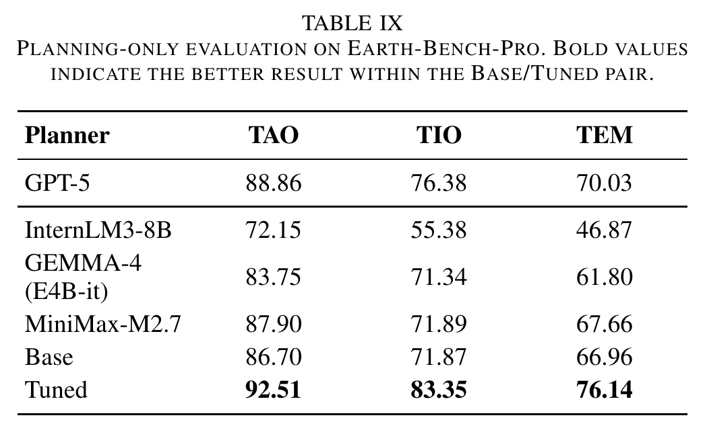
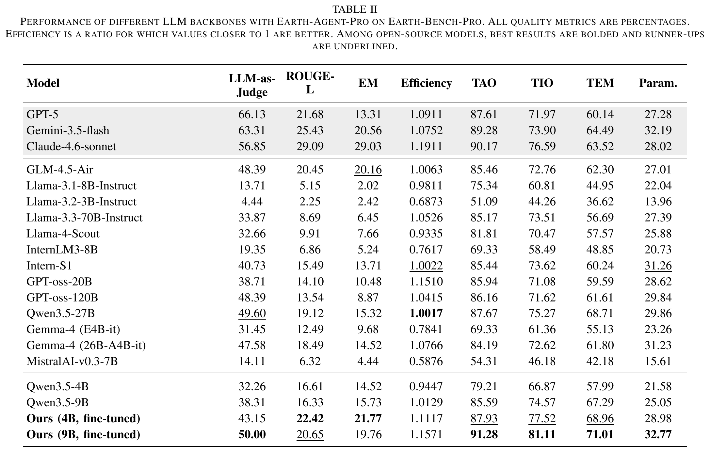
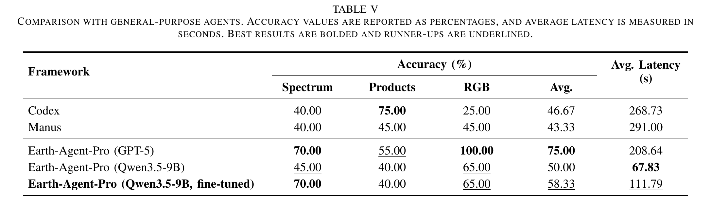
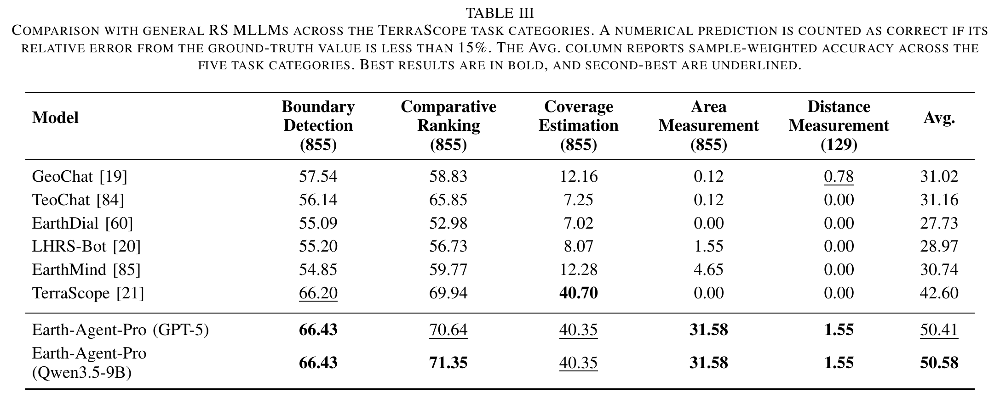
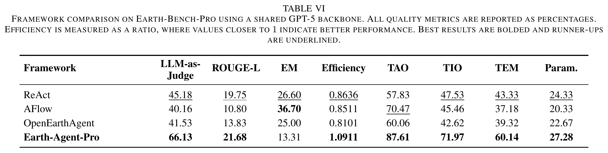
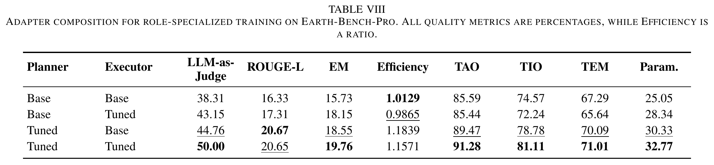
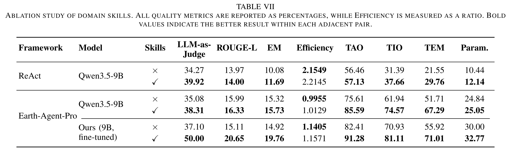
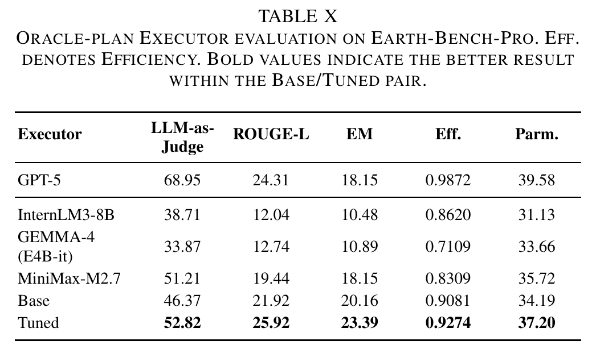

{kind=link}
{kind=link}
{kind=link}
{kind=link}
{kind=link}
{kind=link}
{kind=link}

Planner SFT improves workflow composition. Isolating planning shows gains in the predicted tool set and order. These scores do not imply successful end-to-end execution, which also depends on runtime grounding.
Download two years of MODIS data and repair annual aggregation through two replanning steps.
Download MODIS observations and replace an incompatible processing tool.
Replace a failed ship detector, then measure the closest pair.
Keep the accepted result for Region A and replan the missing Region B analysis.
Switch the detection tool and locate the center of the largest court.
Real-world Earth observation (EO) analysis requires agents to turn high-level scientific questions into workflows that acquire observations, prepare data, perform domain computations, and derive conclusions from runtime evidence. Existing EO agents and benchmarks generally cover only part of this chain, often starting from supplied observations, prepared inputs, or candidate answers. Earth-Agent-Pro is an execution-adaptive Plan-and-Execute framework that uses expert-authored skills to constrain workflow planning and runtime tool use. Workflow-centered structured memory links planned steps to accepted evidence and their dependencies, supporting repair of the affected workflow suffix while preserving valid progress. Earth-Bench-Pro instantiates 248 expert-curated task cores as 744 questions across three matched regimes, covering RGB imagery, spectral observations, and remote sensing products. Separate Planner and Executor adapters specialize workflow composition and runtime tool-argument grounding. On Earth-Bench-OW, Earth-Agent-Pro achieves 66.13% LLM-as-Judge accuracy under a shared GPT-5 backbone, 20.95 percentage points above ReAct. Combining the two trained adapters raises Qwen3.5-9B LLM-as-Judge accuracy from 38.31% to 50.00%.
THE NEXT STEP

Our earlier Earth-Bench starts from expert-prepared local inputs and multiple-choice questions. This setting leaves runtime data discovery and open-ended answer generation outside the evaluation. Real-world users bring scientific questions without preparing a complete analysis pipeline or supplying candidate answers. They should be able to ask about a phenomenon, region, and period without first selecting, acquiring, and preprocessing every required observation.
Earth-Agent-Pro takes the user's query and input requirements as the starting point. The agent must locate runtime inputs, acquire observations when required, prepare data, perform domain computations, and derive an open-ended answer from execution evidence. Earth-Bench-Pro makes this shift measurable by preserving Earth-Bench's 248 scientific objectives across matched regimes that progressively remove the reference workflow and prepared inputs. Its Open-World Execution regime requires online acquisition for Spectrum and Product tasks and runtime file discovery for user-provided RGB imagery.
 Earth-Bench-Pro
Earth-Bench-Pro
Earth-Bench-Pro instantiates 248 expert-curated task cores as 744 questions across three matched regimes: Instruction-Following, Autonomous-Planning, and Open-World Execution. The benchmark spans RGB imagery, spectral observations, and remote sensing products.
Within the 248 Open-World Execution questions, 188 Spectrum and Product tasks require online acquisition and preprocessing. The remaining 60 RGB tasks retain user-provided imagery with runtime file discovery. All three regimes use open-ended answers and evaluate both final outcomes and execution trajectories.
The 248 verified open-world workflows contain 1,765 tool calls, use 84 distinct tools, and average 7.1 calls per task. Matched variants yield 5,295 reference calls across all 744 questions. Experts author 323 acquisition specifications for the 188 Spectrum and Product tasks, including sources, bands, spatial extent, time, resolution, sampling and scaling.
Evidence is part of the benchmark. Experts rerun workflows, inspect intermediate rasters, files, numerical outputs, masks, and statistics, and check final values, units, precision, temporal references, and trends against execution evidence.
 Earth-Agent-Pro
Earth-Agent-Pro
Earth-Agent-Pro is an execution-adaptive Plan-and-Execute framework. Expert-authored skills constrain workflow planning and runtime tool use. The Planner composes an ordered workflow; the Executor grounds each operation in observations and accepted upstream evidence.
Workflow-centered structured memory records planned steps, accepted evidence, and their dependencies. The Executor first corrects arguments or replaces a tool locally at the current node. If local attempts fail, the Planner proposes a replacement suffix, which the Executor validates and installs while preserving the successful prefix. An Answer Controller checks whether the evidence supports the requested answer and reopens execution when required evidence is missing.
METHOD DETAILS
Six expert-authored skills encode task-level procedures across spectral analysis, product-based computation, and RGB perception. They specify tool scope, operation order, argument constraints, and repetition rules. Skill and tool routing narrow the catalog of 112 callable tools before planning.
Structured memory records planned and invoked tools, grounded arguments, execution status, provenance, and revision history. Only verified results become evidence for downstream operations.


Separate Planner and Executor adapters specialize the underlying language model for different roles. Sequence-level supervised fine-tuning targets workflow composition; node-level group relative policy optimization targets tool-argument grounding with locally verifiable rewards.
On Earth-Bench-OW, combining the separately trained Planner and Executor adapters raises Qwen3.5-9B LLM-as-Judge accuracy from 38.31% to 50.00%, an 11.69 percentage-point gain over the untuned configuration.
Training-data construction. Dependency-preserving instantiation expands 248 seed workflows into 2,480 trajectories. Reviewed sample-specific programs update linked slots while preserving tool sequences, schemas, processing operations, and dependencies. Quality filtering precedes mixing these trajectories with examples from the public OpenEarthAgent training set.
Different objectives for different roles. Planner supervised fine-tuning (SFT) learns tool selection and ordering. Executor group relative policy optimization (GRPO) compares generated argument dictionaries with reference arguments for a prescribed tool at each node. The pretrained backbone stays frozen while each role trains its own LoRA adapter. Runtime verification separately checks execution validity.
BACKBONE EVALUATION

Final-answer quality and workflow fidelity expose different strengths. GPT-5 has the highest LLM-as-Judge score in this comparison; the fine-tuned 9B model attains the strongest TAO, TIO, TEM, and parameter-accuracy scores among the reported open-source models. Fine-tuning improves judge accuracy by 10.89 points for the 4B model and 11.69 points for the 9B model.

Open-World Execution has the lowest LLM-as-Judge accuracy across the backbones shown in this comparison. The matched regimes progressively remove the reference tool sequence and prepared inputs while preserving the scientific objective. “Ours” denotes the role-specialized Qwen3.5-9B.
COMPLETION AND COST

Earth-Agent-Pro with GPT-5 reaches 75.00% average accuracy and 208.64 seconds mean latency in this comparison, compared with 46.67% and 268.73 seconds for Codex. Codex leads on Product tasks; Earth-Agent-Pro leads on Spectrum and RGB. For Qwen3.5-9B, role training raises accuracy from 50.00% to 58.33% and latency from 67.83 to 111.79 seconds. This comparison uses final-result accuracy: non-numerical answers must match the reference, and numerical answers must have relative error below 15%.
GENERALIZATION

This comparison uses open-ended questions across five TerraScope task categories, without candidate answers. Earth-Agent-Pro reaches 50.58% sample-weighted accuracy with Qwen3.5-9B and 50.41% with GPT-5, compared with 42.60% for TerraScope. Both variants reach 31.58% on area measurement, while distance measurement remains difficult. Numerical answers count as correct when their relative error is below 15%. The first four categories contain 855 examples each; distance measurement contains 129.
Earth-Bench-OW, with a shared GPT-5 backbone, tool set, and skill set. Quality metrics are percentages; Efficiency is a ratio.

Earth-Agent-Pro leads seven of eight metrics in this framework comparison, including the Efficiency ratio closest to 1. AFlow leads embedding-based semantic matching (EM).
Earth-Bench-OW with Qwen3.5-9B and separate Planner and Executor adapters. Quality metrics are percentages; Efficiency is a ratio.

Combining the trained adapters raises LLM-as-Judge accuracy by 11.69 points and parameter accuracy by 7.72 points. The Efficiency ratio increases from 1.0129 to 1.1571, reflecting longer trajectories relative to the reference.
LLM-as-Judge measures judged answer correctness; ROUGE-L measures lexical overlap; EM is embedding-based semantic matching against the reference answer. TAO (Tools-Any-Order) measures tool coverage, TIO (Tools-In-Order) measures tool ordering, and TEM (Tool-Exact-Match) measures strict workflow agreement. Param. measures tool-argument accuracy. Efficiency compares trajectory length with the reference; values closer to 1 are better. It is not wall-clock latency.
CONTROLLED ABLATIONS

Skills remain useful after training. On the tuned 9B model, adding skills increases judge accuracy from 37.10% to 50.00%. Skills supply explicit procedures; role training improves the learned policies that use them.

Planner SFT improves workflow composition. Isolating planning shows gains in the predicted tool set and order. These scores do not imply successful end-to-end execution, which also depends on runtime grounding.

Executor GRPO improves argument grounding. The oracle-plan evaluation fixes the reference tool order and disables tool replacement, early termination, suffix replanning, and workflow editing. Nodes still generate arguments, execute tools, verify outputs, and retry the same tool when needed. The tuned Executor raises LLM-as-Judge accuracy from 46.37% to 52.82% and parameter accuracy from 34.19% to 37.20%. GPT-5 remains higher on both metrics in this setting.
ERROR ANALYSIS

The error analysis above counts logged operational errors across 248 trajectories per run; one trajectory can contribute multiple events. The categories cover repeated calls without progress, nonexistent tools, nonexistent files or paths, and invalid parameters. Adding skills reduces total events by 36.0% for the fine-tuned 9B model and 60.9% for the base 9B model. These are reductions in error-event counts, not task failure rates.
Workflow fidelity and final-answer correctness remain distinct. The strongest TEM and parameter scores in the backbone comparison reach 71.01% and 32.77%, and open-ended distance measurement remains difficult. Skill guidance can improve answer quality while increasing trajectory length. The case study below shows successful Spectrum and RGB cases alongside a Product failure, where incorrect downstream tool selection produces the wrong answer despite correct upstream data preparation.

arXiv citation.
@misc{lv2026earthagentprorealworldfullchainearth,
title = {Earth-Agent-Pro: Towards Real-World Full-Chain Earth Observation with Agents},
author = {Zhutao Lv and Chenhao Dang and Yi Feng and Yanpei Gong and Xiaolei Wang and Junyan Ye and Conghui He and Weijia Li},
year = {2026},
eprint = {2609.12533},
archivePrefix = {arXiv},
primaryClass = {cs.CV},
url = {https://arxiv.org/abs/2609.12533},
}{kind=link}